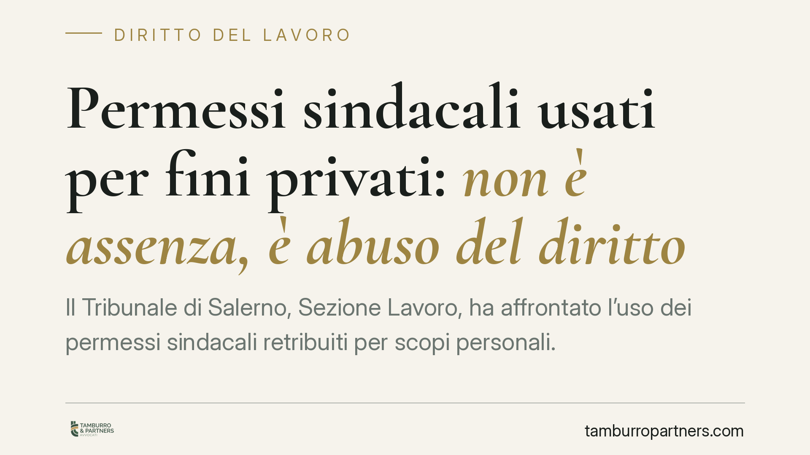

Permessi sindacali usati per fini privati: non è assenza, è abuso del diritto
Il Tribunale di Salerno, Sezione Lavoro, ha affrontato l'uso dei permessi sindacali retribuiti per scopi personali. La decisione qualifica la condotta come abuso del diritto, non come semplice assenza ingiustificata, con conseguenze rilevanti sulla legittimità del controllo investigativo e del licenziamento. Un tema che tocca direttamente il confine tra tutela dell'attività sindacale e doveri di correttezza del lavoratore.

Il caso
Un rappresentante sindacale fruiva di permessi retribuiti previsti dallo Statuto dei lavoratori. Il datore di lavoro, insospettito, incaricava un'agenzia investigativa che documentava come le ore di permesso venissero impiegate per attività del tutto estranee al mandato sindacale.
Il Tribunale di Salerno (sent. n. 1489/2026 — *estremo da verificare presso la cancelleria*) ha ritenuto legittimo il licenziamento, qualificando la condotta non come mera assenza, ma come abuso del diritto. La distinzione non è teorica: cambia il perimetro di ciò che il datore può accertare e sanzionare.
Inquadramento normativo
I permessi sindacali trovano fondamento negli artt. 23 e 24 della L. 300/1970 (Statuto dei lavoratori). L'art. 23 riconosce ai dirigenti delle rappresentanze sindacali aziendali permessi retribuiti per l'espletamento del mandato; l'art. 24 disciplina i permessi non retribuiti. Il monte ore concreto, le modalità di richiesta e i limiti di fruizione sono poi definiti dal CCNL applicabile e dagli accordi aziendali: è lì che si misura, caso per caso, la legittimità della singola fruizione.
Si tratta di un diritto funzionale: è attribuito in vista di uno scopo preciso, l'attività sindacale. Quando le ore vengono destinate a fini privati, il diritto viene esercitato al di fuori della sua funzione. Da qui la qualificazione come abuso, che si traduce in una percezione indebita di retribuzione e in una lesione del vincolo fiduciario.
Il principio di diritto, in sintesi: *il permesso retribuito presuppone l'effettivo svolgimento dell'attività a cui è destinato; la sua distrazione a scopi personali integra un inadempimento dei doveri di correttezza e buona fede, non una semplice assenza*.
Controllo sul rendimento e controllo difensivo
Il punto delicato riguarda i limiti al potere di controllo. Gli artt. 2 e 3 St. lav. vietano al datore di sorvegliare l'adempimento della prestazione lavorativa tramite guardie giurate o personale di vigilanza: non si può controllare il *rendimento* del lavoratore.
Altra cosa è il controllo difensivo: quello diretto ad accertare condotte illecite già sospettate, estranee al normale svolgimento della prestazione. La giurisprudenza lo ammette entro limiti rigorosi, purché mirato, proporzionato e successivo all'insorgere di un fondato sospetto.
Nel caso dei permessi sindacali, l'investigazione non verifica *come* il lavoratore svolge il suo lavoro, ma *se* ha utilizzato un diritto per scopi diversi da quelli per cui è concesso, percependo una retribuzione non dovuta. Per questo il controllo investigativo è stato ritenuto legittimo.
Il rischio di condotta antisindacale
Resta un contrappeso da non trascurare: l'art. 28 St. lav. sanziona i comportamenti del datore diretti a limitare o impedire l'attività sindacale. Un controllo indiscriminato e sistematico su tutti i permessi di un rappresentante, privo di un sospetto specifico, può sconfinare in una condotta antisindacale, con esposizione al relativo procedimento su ricorso dell'organizzazione sindacale.
Il datore deve quindi muoversi su un crinale stretto: accertare l'abuso individuale sì, ostacolare l'esercizio del diritto no.
Implicazioni pratiche
Per il datore di lavoro, la sentenza conferma che l'uso distorto dei permessi può fondare un licenziamento disciplinare, anche di natura espulsiva, se la gravità lo giustifica. Occorre però documentare l'illecito in modo puntuale e rispettare la proporzionalità tra fatto e sanzione.
Per il lavoratore e per il rappresentante sindacale, il messaggio è altrettanto chiaro: il permesso non è tempo libero retribuito, ma strumento vincolato a una funzione.
Cosa fare in concreto
- Verifica il CCNL e gli accordi aziendali per individuare monte ore, modalità di richiesta e obblighi di comunicazione sui permessi.
- Attiva il controllo solo su un sospetto fondato e specifico: evita verifiche generalizzate che possono integrare condotta antisindacale ex art. 28 St. lav.
- Documenta l'illecito in forma lecita e proporzionata, limitando l'indagine investigativa a ciò che è strettamente necessario ad accertare l'abuso.
- Rispetta la procedura disciplinare dell'art. 7 St. lav.: contestazione tempestiva e specifica, termine a difesa, valutazione delle giustificazioni.
- Gradua la sanzione in base alla gravità e alla reiterazione: il licenziamento va riservato ai casi in cui l'abuso compromette irrimediabilmente il rapporto fiduciario.
Consigliamo in ogni caso una valutazione preventiva del singolo episodio, perché il confine tra accertamento legittimo e lesione del diritto sindacale si misura sui fatti concreti.
---
Contributo informativo a cura di Tamburro & Partners Avvocati - Avv. Giuseppe Tamburro. Non costituisce parere legale.
Ogni storia di lavoro ha i suoi tempi.
Se gestisci HR e vuoi un confronto su contenzioso, ispezioni o licenziamenti, scrivi allo studio. Ti rispondiamo entro un giorno lavorativo.